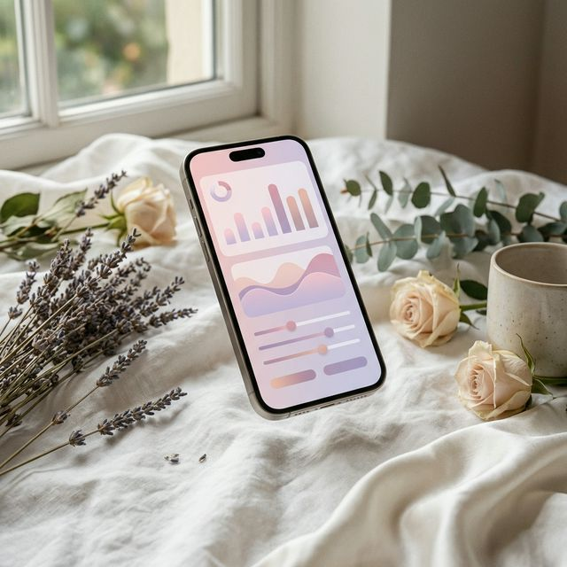
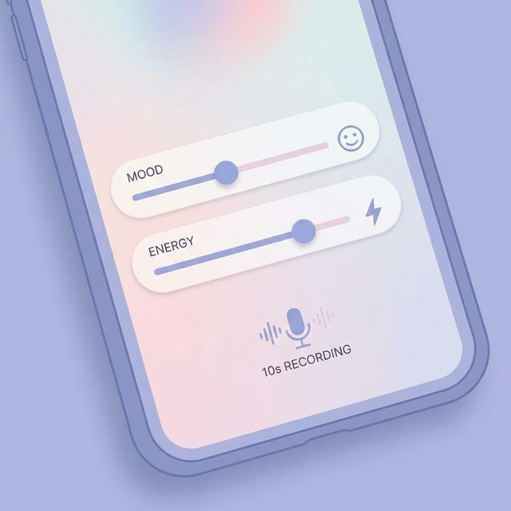
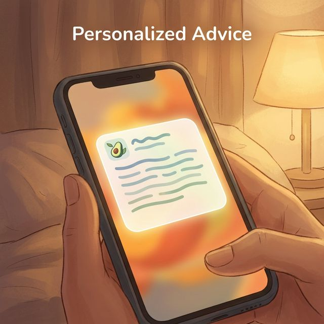

ココロとカラダの
リズムを整える。
40代からの変化に寄り添う、
大人のための自己管理アプリ。

こんなこと、感じていませんか？
最近、イライラしやすくなった
理由もなく気分が落ち込む
生理の周期が乱れてきた
疲れがなかなか取れない
LunaLogができること
1. たった10秒で記録完了
気分の波、不安、イライラ、エネルギー。
直感的なスライダー操作で、今の状態をサッと記録。
忙しい毎日でも続けられます。

2. あなただけのアドバイス
記録された体調や周期に合わせて、
今日の過ごし方やおすすめの食事を提案。
無理なくできるセルフケアをサポートします。

3. 大切な人へ、やさしく共有
「今日はそっとしておいてほしい」
そんな言いづらい気持ちも、
角が立たないメッセージにしてパートナーや家族へ共有できます。

使い方はとてもシンプル
1
記録する
毎日の気分や体調をタップなどの
簡単操作で記録。
2
知る
グラフやレポートで
自分のリズムや傾向を把握。
3
整える
アドバイスを参考に
無理のない生活リズムへ。
あなたの毎日を、もっと穏やかに。
まずは無料で始めてみませんか？